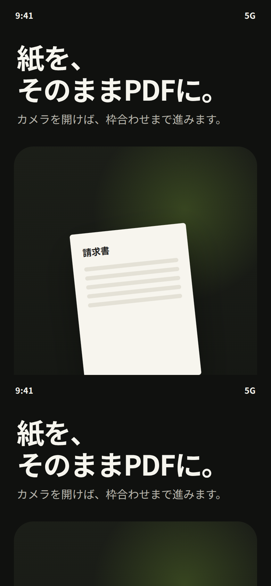
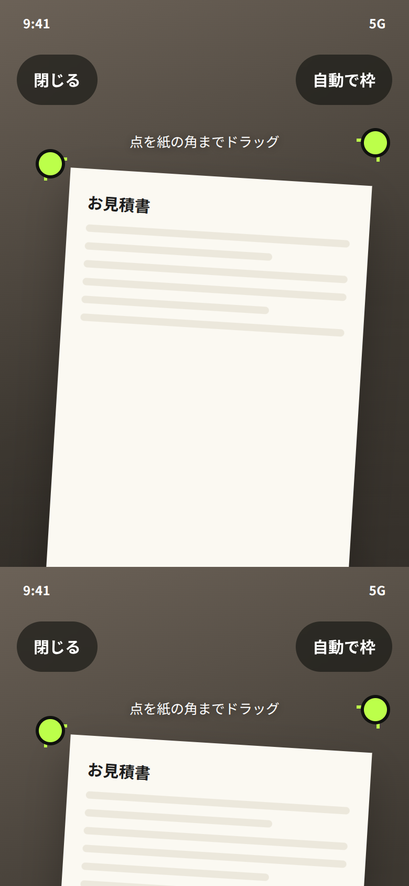
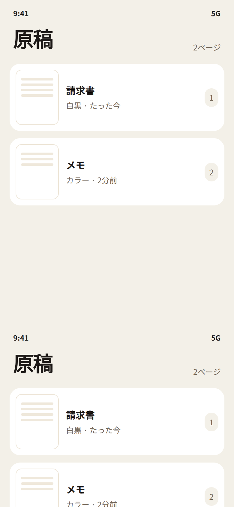
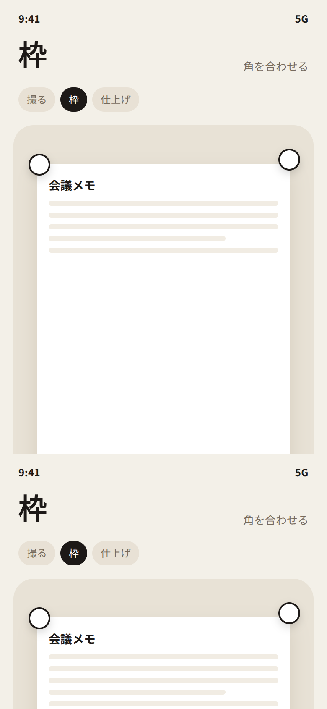
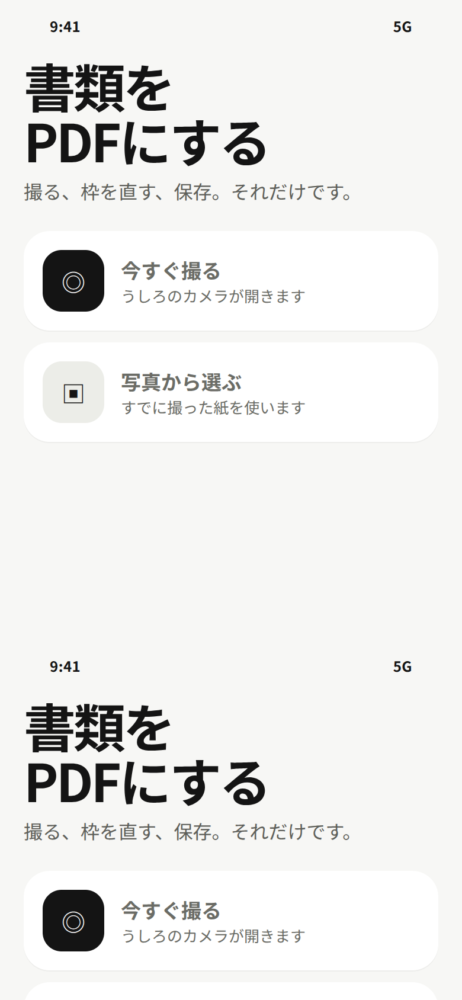
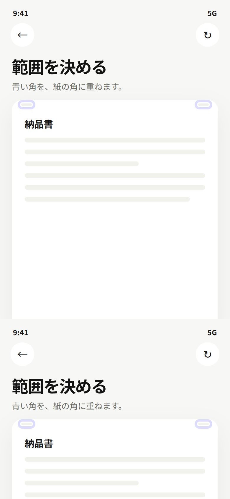

A. インク
暗い画面です。カメラを開くボタンを一番下に置き、枠合わせは撮った写真の上でそのまま行います。


スマホで親指が届く位置にボタンを置き、最初に何をすればいいか分かるようにした案です。本番のアプリにはまだ入れていません。
暗い画面です。カメラを開くボタンを一番下に置き、枠合わせは撮った写真の上でそのまま行います。


撮ったページをカードで並べます。下のバーで追加とPDFを分け、「撮る、枠、仕上げ」のどの段階かも見えるようにしています。


最初は「今すぐ撮る」と「写真から選ぶ」だけです。枠の画面で、白黒・グレー・カラーをその場で選べます。

